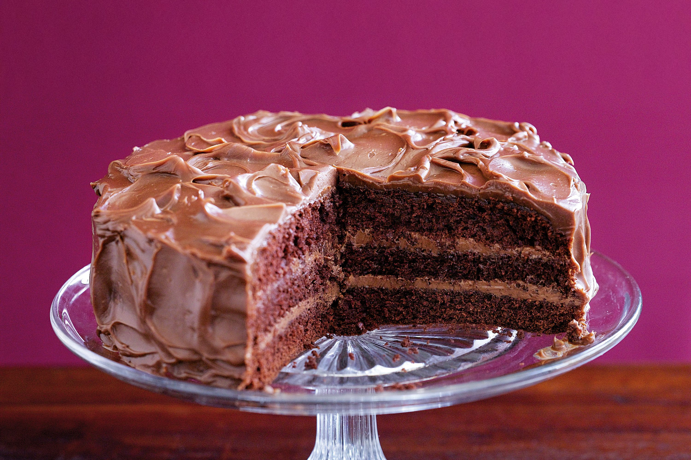

Welcome to Evyy Cafe's most cherished dessert recipes! These delightful treats are customer favorites at our cozy cafe, and now you can recreate the magic in your own kitchen. Each recipe has been carefully selected by our team – Ellie, Viktoriya, Yasiel, and Yekaterina – to bring a taste of our retro cafe experience to your home. Enjoy these global desserts that tell stories as rich as their flavors!

Devil's Food Cake
Difficulty:
Prep: 30 min
Bake: 35 min
Serves: 10-12
This American classic is one of Ellie's specialties at Evyy Cafe. Our customers adore the deep chocolate flavor and impossibly moist texture.
View Full Recipe

Tres Leches
Difficulty:
Prep: 25 min
Chill: 4 hrs
Serves: 9-12
Yasiel brought this Latin American treasure to our menu, and it quickly became a weekend special that sells out by noon.
View Full Recipe

Woodpile Cake / Crepe Cake
Difficulty:
Prep: 45 min
Cook: 30 min
Chill: 2 hrs
Yekaterina's Moldovan heritage shines through in this beautiful layered dessert with delicate layers and subtle flavors.
View Full Recipe

Napoleon Cake
Difficulty:
Prep: 1 hr
Bake: 30 min
Chill: 6 hrs
Viktoriia's version of this Russian classic has a unique spice blend that reflects her Central Asian roots.
View Full Recipe